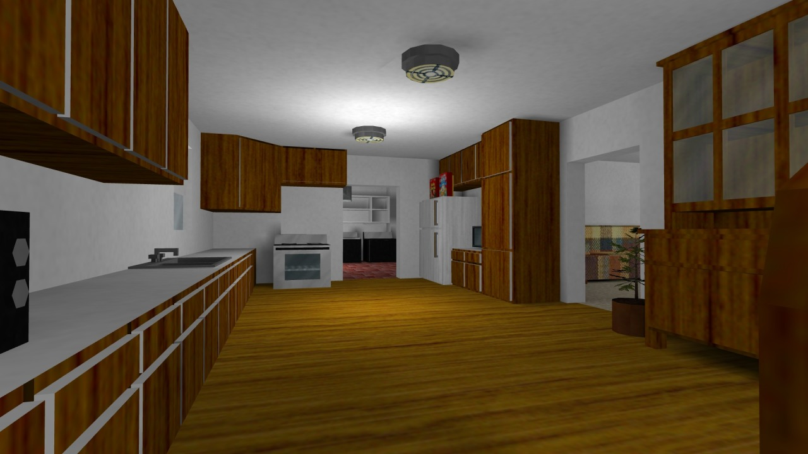
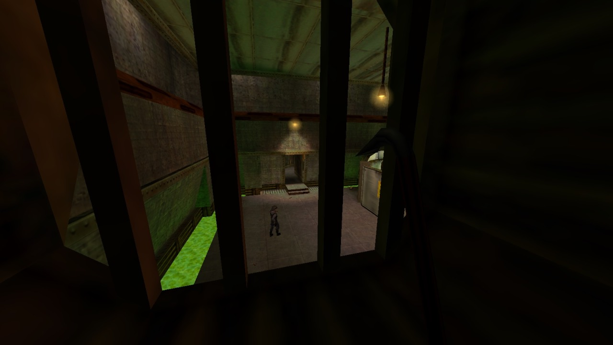
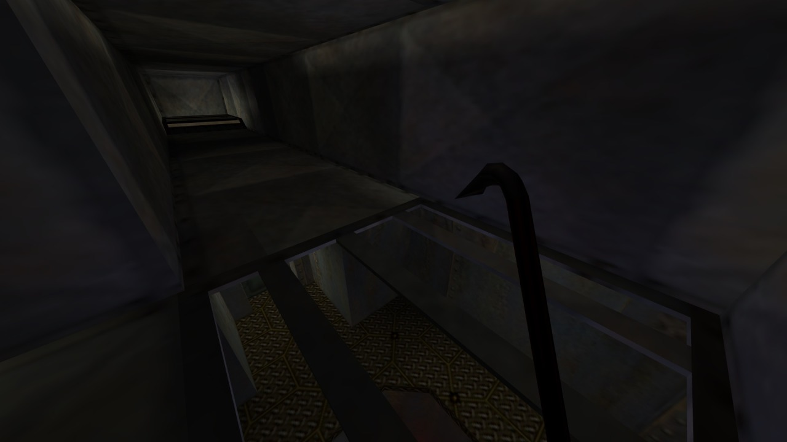

Creativity is hard. Really hard. I regularly run into people who claim to simply not have an imagination, and while I’m not one to insist that every human being is a boundless font of wondrous fantasies waiting to be uncorked, it seems far more likely that they’ve just underestimated the difficulty involved. Creativity without bounds is even harder: confront most people with a blank canvas and they’ll probably struggle to do more than doodle idly, or fall back on some reliable standby, like a still life of a fruit bowl or a drawing of that cool S that every primary school kid knew how to make.
It’s the same story with level design, naturally. When granted the infinite power of the Hammer editor—alright, not so much ‘infinite’ as ‘modest, obtuse, flexible, a little bit buggy’—a lot of people tend to forego alien landscapes and secret laboratories, instead opting to recreate… their house. Or their school. Or their office. Familiar, mundane spaces; the sorts of places that the designers must’ve seen every day. Such maps litter the Counter-Strike community’s ageing archives, passing slowly into total obscurity alongside de_dust2 clones and deathmatch yards with misaligned textures.

As far as most people are concerned, the appropriate response is “good riddance to bad, unplayable rubbish”. They were crap. Counter-Strike, contrary to its gritty, tactical façade full of burly men with military hardware strapped to every inch of their body armour, doesn’t actually perform well with faithfully recreated realistic spaces. They’re too cramped, or too wide-open; too cluttered, or too empty; too full of areas that are impossible to hold down, or impossible to assault. You ever do that thing with your housemates where you’re both heading towards one another in a corridor and neither of you can pass because you keep picking the same side to pass each other on? Right. Now imagine that you have the size and flexibility of a fridge freezer. Also you’re stuck in a door that won’t stop trying to open, and you’re being shot in the shins, and your housemate is actually a man in a balaclava who fucked your mum.
What I’m saying is that these maps had very little value as spaces for play, which is—rather understandably—the only metric we ever really gauge them by. We see level design as a means of creating a product; an arena for twitchy young men to gun each other down in on a lazy Sunday afternoon. A map is the platform on which experiences play out, not the experience itself. Nevertheless, like any blank canvas, the level editor’s grid is a creative medium through which aspects of the designer can seep, and while most maps are pretty outrageously poor at getting such aspects across, it’s a different story when the map itself is a recreation of somewhere the designer has personally left their mark on.
Have you ever wanted to see inside a stranger’s home? I don’t mean in a creepy, antisocial, ‘stake out for twelve days working out when it’s safe to break in and sniff the toilet seat’ kind of way. I’m talking about seeing a single incandescent square on the side of a darkened apartment block on your evening train ride home, and wondering what kind of life that person lives. I’m talking about waiting in the living room of a stranger while they fetch the television you bought off them on Craigslist, taking in every possible detail out of mild curiosity; I’m talking about wanting to be a fly on the wall, not of somebody you know, but of a person you have no connection to and will never meet, just to see all the little ways that their lifestyle differs from yours. It’s a special kind of intimacy, driven not by perverted fantasy but by the knowledge that everybody’s life is a different story, and the honest craving for just a tiny slice of that story.
When people recreate the spaces that are important to them as maps, they inject a little bit of that intimacy into them. They’re inviting you—all of you, even the requisite weirdos—to explore these recreations, use them as stages for play, get familiar with every last nook and cranny and work out which ones can be best abused. They may be crude imitations of physical locations, limited by the constraints of the engine, tweaked for gameplay and cobbled together out of whatever ill-fitting assets the designer had to hand, but they still reflect reality, hinting at their creators’ lives, the things they value and the things they notice most about the world around them. In a community for a game played all over the globe, by people from a wide range of socio-economic and cultural backgrounds, a diversity of physical spaces is only to be expected.
And not to overstate my part in this, but in my endless archaeological digs through the GoldSrc community’s not-entirely-lifeless ruins, I’ve seen them all. I’ve tossed flashbangs through the living-room windows of suburban homes, perfectly clone-stamped across canvases of freshly-trimmed grass; I’ve led hostages down the stairwells of ageing Soviet housing tenements, pausing only to check out the album of reference photographs that guided their creation; I’ve played grenade dodgeball in the halls of American elementary schools, pondering the kind of reactionary panic such a map must have had to endure around the turn of the millennium; I’ve been in college dorms, glass-filled offices, upper-class mansions, inner-city apartments, country abodes, public libraries, terraced houses and oh-so-many net cafes, all crafted by people who would have seen them in the flesh—or at least, in the mortar—on a regular basis. They invited me into these spaces, in a form quite unlike amateurish camcorder footage or photographs. You only see what they choose to put there, and however sanitised that may be, you can explore what’s been made available to your heart’s content.
You can learn a lot from the small details people choose to spend their meagre polycounts on, too. Much like in rats maps—a phenomenon we should probably leave packed away for another day, I think—many choose to flaunt possessions or taste, meticulously placing game boxes, planting functional stereos, or modelling their workstations, complete with monitors displaying their favourite forum boards. Others are careful to map out every last inch, from closets to crawl-spaces, clearly as invested in exploration of the real-world space as the virtual one. For some, what matters is a perfectly accurate, to-scale floor plan; others wrap blurry photographic textures, clearly sourced from their own camera, around barely-fitting brushwork. They’re no substitute for a hefty autobiographical tome, but they’re a similar sort of avenue: an outlet through which a creative work can serve its functional purpose, yet still say “this is who I am, and where I come from”.
So remember, even in the world of flashbangs and sick headshots, level design doesn’t have to be primarily for the purposes of play. For a multiplayer game like Counter-Strike, inherently built for those who already live in a connected world, designers sharing works that allow an occluded peek into their everyday world seems almost inevitable; a kind of obtuse ‘About Me’ for a world that had yet to be engulfed by the full force of social networking. Perhaps, with time, designers so inclined will learn to consciously throw away all pretences of balanced gameplay, and simply invite people to freely wreak havoc in minutely-detailed recreations of the spaces they call home. It’s cathartic, y’know?
Of all the things Gordon Freeman has acquired a reputation
for doing over the years—bludgeoning alien zombies with a crowbar, staring
mutely at the characters emoting around him, applying his PhD to patronisingly
simple Newtonian physics problems—I think the one I’d be most hesitant to do in
real life is just crawling through a vent. You’re stuck in a dark,
claustrophobic, maze-like space, getting a faceful of stale air blowing in from
god-knows-where, and since you can’t turn around without a five week course in
advanced body contortion, your only option when attacked from behind is to
flail hopelessly and hope your buttocks don’t look too enticing. Oh yes, and as
Mythbusters handily showed us, you can’t actually move anywhere without making
enough noise to alert everybody in the building to your position, direction, and clumsy lack of progress.
Worst of all, in both real- and Half-Life, vents are just
really bloody boring.
They are, though, aren’t they? Crawling through a vent in
Half-Life is like being forced to walk down a very long, dark, featureless
corridor with both your feet tied to a reluctant St. Bernard, and despite many efforts to the contrary, there are only so many ways you can spice up the
experience before I begin to regard their entrances with the resigned sigh of a
sewage technician who wore his good jeans to work on the day that the mains burst. The architecture is
inherently dull, no matter how many dusty fans and offshoots you add, and
unfortunately one set of metal duct panels looks more or less like any other
set of metal duct panels, so meaningful navigation is out of the question.
Combat encounters are limited to headcrabs leaping out in a fruitless attempt
to surprise you, and puzzles aren’t even on the table. The only particularly
interesting thing Valve has ever really done with vents is set-pieces, and even
then, after the second or third one collapses out from underneath him, one
can’t help wondering if Gordon needs to cut down on the headcrab hamburgers.
And yet it wouldn’t be Half-Life without vents. Vents are an
icon of Half-Life, every bit as essential as the crowbar, and they didn’t earn
that distinction just because somebody on the team got off on the thought of a
theoretical physicist struggling to make headway in a cramped, sweaty, metal hole;
they’re a fundamental tool of the level design, and Half-Life couldn’t have
been the same game without them.
To understand vents, we have to realise that they are nothing
more than the most common representation of a level design trope that gets used
all throughout the Half-Life games. I dare say that professional level
designers have some wonderful term for it, but since I’m just a hack with a
desk covered in coffee stains and a hard drive full of lousy deathmatch maps,
I’m going to call this trope the ‘intermediate space’. Intermediate spaces
don’t show up on the map; they’re behind the walls, beneath the floors, above
the ceilings. They’re the places that normal people are never supposed to
traverse; the spaces that practically defined Gordon Freeman’s journey through
the ruined Black Mesa: vents, pipes, chutes, wiring ducts, false ceilings,
gangways, crawl-spaces, elevator shafts, rafters, dumbwaiters, maintenance
holes, hatches and tunnels. They’re cramped, they’re dangerous, and they worm
their way unseen throughout the facility, momentarily surfacing only to
disappear back into its depths. Vents are simply the most famous and widespread
of the litter.
Why does it matter if these spaces exist? To answer that,
we have to realise that Half-Life’s level design—as well as the level design of
the innumerable games that borrowed from it—is, at its heart, a compromise. To
you and I, fans of the golden age of first-person shooters, the word ‘realism’
can leave a bit of a sour taste depending on your personal experiences, but in
their own way, that’s exactly what Half-Life’s environments shot for. Whatever
creative license the mad science of Black Mesa gave Valve, they were still
frequently creating contemporary, believable spaces: offices, storage rooms, hallways, parking
lots, bathrooms, warehouses, security checkpoints, all logically arranged and
framed by sensible architecture. Black Mesa was supposed to feel realistic,
unbroken, seamless, like a proper place, free of such fundamentally video-game-y
concepts as ‘levels’ or 'zones’.
Except you can’t really do that. No seriously, you can’t. If
you want to make a linear first-person shooter with finely-balanced pacing and
interesting combat encounters, the absolute last thing you want out of your
level design—the abstract structure of the maps, not all the visual stuff that
gets slapped into them—is realism. Architects don’t plan for gunfights;
warehouse workers don’t arrange their cargo into stacks of cover. Buildings are
supposed to facilitate free movement through them, not squeeze everybody
through choke-points and one-way corridors. Half-Life is a twelve-hour-long
tube with train rides at both ends, but does it feel like it? No, Black Mesa
feels like a believable space in a way that few first-person shooter settings
at the time could claim. It takes realistic architecture and carefully moulds
it around areas, arenas, routes and transitions, like papier mâché around an
unnerving wireframe skeleton, to create a space that superficially looks
convincing but ultimately puts gameplay first.
But of course, as is usually the case with this kind of
thing, the logic of the world doesn’t always fit snugly to the structure of the
levels. Freeman enters the freezer through the door, but where’s he going to
come out? How’s he going to get from this rocket exhaust tunnel to this train
station, or from this office corridor to this cargo bay? With vents, and pipes,
and crawl-spaces galore, that’s how. Are there structural conventions that
ventilation systems ought to follow? Of course, but nobody knows or cares what
they are. They can start anywhere and finish anywhere, needing nothing but a
small section of flat wall and an unobstructed flow of air to seem believable. Intermediate
spaces are the semicolons of Half-Life’s level design; an elegant way of having
one space logically follow from another without having to explicitly show how
they’re related. They are the paste that seals the cracks in the façade; the
kind of all-purpose, industrial-strength filler that makes your nostril hairs
shrivel up in disgust but grips like the jaws of death without so much as a
seam.

But that’s far from the end of
intermediate spaces’ virtues. One of their more interesting applications,
exemplified in Office Complex and the chapter that follows it, We’ve Got
Hostiles, is where they’re used not just as a way of smoothing out the
transitions between areas, but as a way of making our perception of how those
areas are spatially organised more nuanced. Y'see, the thing about Half-Life’s
level design, especially in Black Mesa’s unending subterranean tunnels, is that
it tends to sprawl like a sloshed middle-aged football fan on the Saturday
night train; there’s no obligation to make rooms fit together snugly, so
there’s a lot of negative space behind the walls that we just unconsciously
assume is filled with something, be it inaccessible rooms, storage
closets, maintenance cavities, or just a load of solid sedimentary rock. If I
can be extra pretentious for a second, this negative space exists in a kind of
quantum superposition of states; it could be any number of things, but since we
can’t actually find out, it remains an amorphous mystery, framing the
environments with the vague promise that there is, in some way, more to the facility than what you can see.
Most of Half-Life follows this pattern: a linear sequence of areas worming
their way through the void, surrounded by hints of a theoretical Black Mesa
that’s a lot more structurally logical—or at least, was a lot more structurally logical, before everything went to
hell.

Here and there, with the help of
some cleverly-structured vents, we get a glimpse of that Black Mesa. Intermediate
spaces aren’t just used as a means of transitioning from A to B, but from A back to A; they loop around, showing us
the same places in a new light, revealing their subtle interconnectedness. Who
can forget taking refuge from the military’s bombardment in an air duct only to
peek through a grate below and see the storage bays from earlier in the chapter?
Who can forget taking a detour through the cold room’s vents and emerging on
the far side of the door that had previously stumped them? The false ceilings
of the tacky fifties offices promise acres of hidden cavities, and multiple
times you’ll fall through one only to find yourself in a familiar room. “Look,”
the game whispers, beckoning tantalisingly. “Everything fits together, like a
real building.” It peels back the walls, populates small pockets of the void, and
lends the sense that the world beyond the playable space has, in some small
way, coalesced into something more defined.
So yes, in spite of them sitting in
the core gameplay experience like a lump of soggy tissue paper in a bowl of
Weet-Bix, I’m glad that Half-Life has such an unshakeable love for vents. Sure,
there are plenty of places where they could be supplanted by more visually
interesting and diverse intermediate spaces, but none are as ubiquitous in the
world or as flexible as the humble ventilation duct. It’s a workhorse of level
design; not especially engaging in itself, but capable of adding layers of depth
and authenticity to the environments of a linear, tightly-paced shooter that
few of its contemporaries can claim to have achieved. In a perfect world, vents
wouldn’t have to be prevalent in a Half-Life game; every area would flow seamlessly
into another without breaking the illusion of believable architecture or
destroying the level design, and you’d be subtly funnelled through the levels
without their linear structure ever standing out. In our imperfect world, full
of compromises and patch-jobs and necessary shortcuts, they’re the next best
thing.